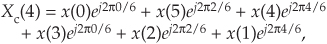

C Time Reversal and the DFT
The notion of time reversal in discrete systems occasionally arises in the study of the discrete Fourier transform (DFT), the mathematical analysis of digital filters, and even in practice (straight time reversal is used in a digital filtering scheme described in Section 13.12). We give the topic of time reversal some deserved attention here because it illustrates one of the truly profound differences between the worlds of continuous and discrete systems. In addition, the spectral effects of reversing a time sequence are (in my opinion) not obvious and warrant investigation.
Actually, in discrete-time systems there are two forms of time reversal we need to think about. Consider the 6-point x(n) time-domain sequence
Due to the periodicity properties of discrete sampled representations (discussed in Section 3.17), we can depict the x(n) time sequence as samples on a circle as shown in Figure C-1(a). There we arbitrarily assign positive time flow as counterclockwise rotation. (For our UK friends, counterclockwise means your anticlockwise.)
Figure C-1 Circular representations of periodic sequences: (a) original x(n) sequence; (b) circular time reversal of x(n).
Time reversal, as defined here for sequences that are treated as periodic, means traveling clockwise around the circle (in the negative time direction), creating a new time sequence
We call xc(n) the circular time reversal of x(n), where the subscript “c” means circular reversal, and depict xc(n) as in Figure C-1(b).
The interesting issue here is that for real N-point time sequences, the DFT of xc(n) is the complex conjugate of the DFT of x(n). That is,
where the DFT index is 0 ≤ m ≤ N–1. Due to the conjugate symmetry of DFTs of real sequences, we should realize that X*(m) is a straight reversal of the X(m) samples.
Let’s illustrate Eq. (C-3) with an example. With X(m) representing the DFT of x(n), we can write down X(m)’s m = 4 sample X(4) as
Because e–j2πk/6 has a period of 6, we can write Eq. (C-4) as
Next, let’s write down the (circular-reversed) Xc(m)’s m = 4-sample Xc(4) as
or
Replacing Xc(4)’s negative angles with their positive-angle equivalents yields

which is the conjugate of Eq. (C-5), demonstrating that X(m) and Xc(m) are complex conjugates.
An alternate time reversal concept, which we’ll call straight time reversal, is the simple reversal of Eq. (C-1)’s x(n), yielding an xs(n) sequence
where the subscript “s” means straight reversal. For real N-point time sequences, the DFT of xs(n) is

We can demonstrate Eq. (C-10) the same way we did Eq. (C-3), but consider Figure C-2. There we show the samples of repeated revolutions around the xc(n) circle in Figure C-1(b), indicating both the 6-point xs(n) and the 6-point xc(n) sequences. Notice how xs(n) is shifted backward in time by five samples from xc(n).
Figure C-2 Periodic sequences xs(n) and xc(n).
Using the principle of the DFT’s shifting theorem from Section 3.6, we know that Xs(m) is equal to Xc(m) times a linear phase shift of e–j2πm(5)/6 for our N = 6 example. So, in the general N-point sequence case,
which validates Eq. (C-10).